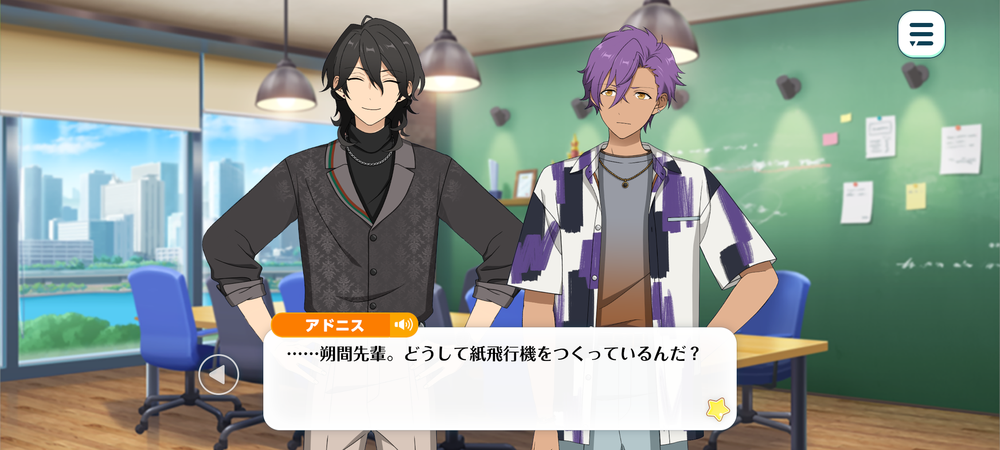
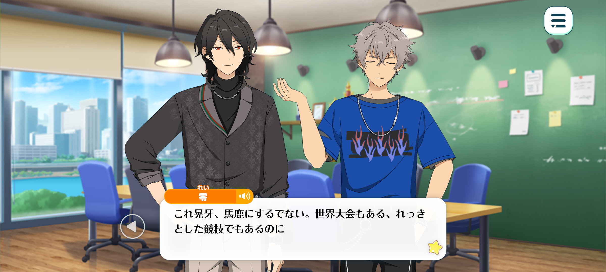
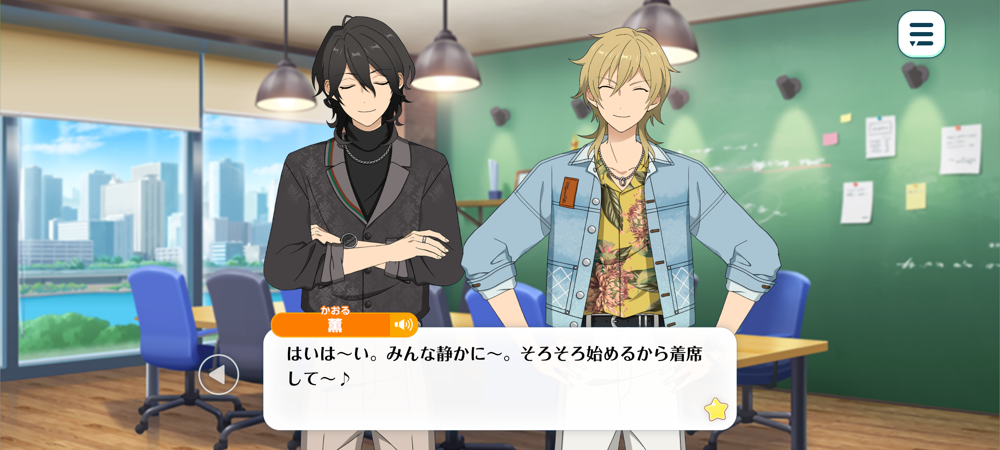
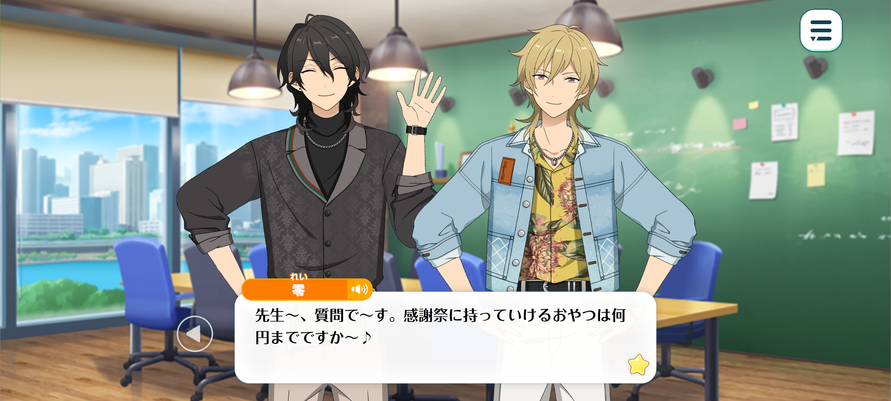
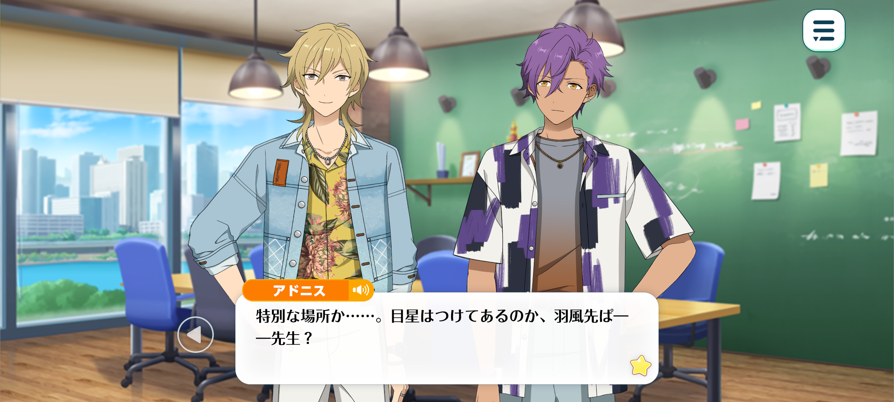
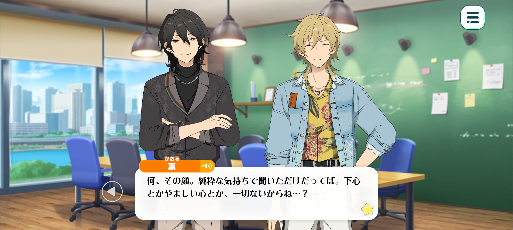
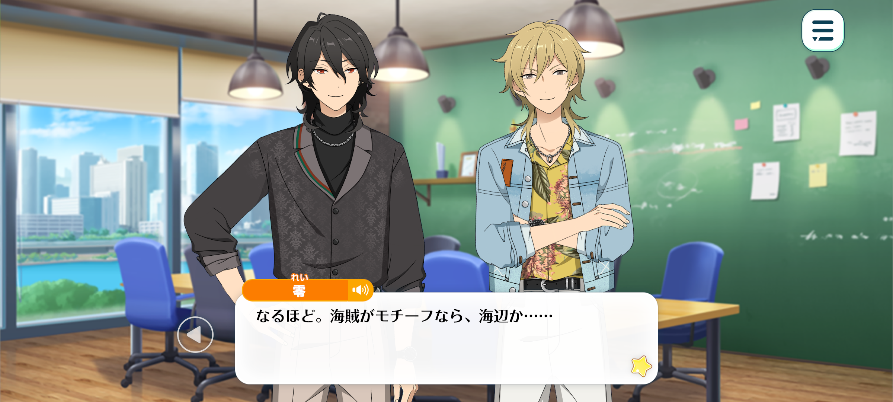

Velvet Ship
Haul To The Wind / Chapter 5


Time: Several minutes later
Location: Meeting Room

Rei: ♪~♪~♪
Adonis: ...Sakuma-senpai, why are you making paper airplanes?
Rei: There isn’t much else to do. Idle hands are the devil’s playthings, after all.
Besides, keeping your hands busy can help clear your mind.
Adonis: Clear your mind?
Rei: Mhm. Paper airplanes may look simple at first glance, but there’s more to them that meets the eye. The way you fold the paper can completely change the shape of the finished piece.
You have to keep its balance in mind, too, and make sure each crease is nice and crisp. It’s a rather satisfying little exercise.
Fortunately, we have plenty of paper to spare. Would you care to make one yourself, Adonis-kun?
Adonis: I see. I appreciate the offer, but I am a little reluctant to use this paper.
Rei: Oh? But it’s already been used, so there’s no harm in it.
It’s not as though there’s any confidential information written on it. Just some doodles, by the look of things. Someone must have been amusing themselves during a tedious meeting.
Moreover, I’m sure the paper would be delighted to have one last purpose. Better to let it soar through the air than consign it to the rubbish bin, wouldn’t you say?
Adonis: ...I suppose you have a point.
In that case, I’ll give it a try. Would you show me how, Sakuma-senpai?
Rei: Hm? Have you never tried your hand at origami before?
Adonis: I have, countless times, but never properly. I’ve never actually followed a set of instructions or anything like that.
Whenever I attempt a more difficult fold, I end up tearing the paper. It’s difficult to persevere when you’re trying to figure everything out on your own.
Rei: Kukuku. You do have quite the strong grip.
But fret not. The basic folds are much easier to master than you might think.
And that’s part of the joy of it, you see. With a little patience and practice, even the most stubborn piece of paper can learn to fly. Come now, let’s make a paper airplane that even you won’t give up on…♪

Koga: I’ve been listen’ to you guys this whole time, and man, you're seriously childish.
Paper airplanes? What, are you *five*!?
Rei: Now now, Koga, there’s little need to poke fun. It is a perfectly respectable sport, you know. There are even world championships devoted to it.
For instance—
Koga: ...Ow?!
Rei: I can even land a little strike on the back of Koga’s head.
Koga: Hey! Cheap shots from behind don’t count!
Rei: Kukuku. One musn’t let one’s guard down on the battle field ♪

Kaoru: Okay, okay, everyone, settle down~! Class is about to start, so find yourself a seat ♪
Rei: Oh my, it seems Kaoru-sensei has finally graced us with his presence. Very well, shall we begin?
Adonis: ...? Oogami, aren’t you going to sit down?
Koga: I seriously can't take it with you guys.
Kaoru: But if you don't sit down, we can't get started, can we?
Koga: ...Tch.
Rei: Kukuku. You could have saved yourself the trouble and sat down from the start.
Koga: Shut it! Hakaze-senpai, just get on with it already!
Kaoru: That's Hakaze-sensei to you, thank you very much. Now then, is everyone good to start?
Alrighty! Today’s topic is our fan appreciation event! ♪

Rei: Sensei~, I have a questionnnn. How much pocket money may we bring for refreshments? ♪
Koga: What the hell’s wrong with you, dude? Why’re you askin’ questions like we’re going on a damn school trip?
Anyway. I know we came up with a ton of ideas, but I thought we’d settled on doing a live?
Don’t tell me you’ve changed your mind? You better not have.
Kaoru: Oh, I don’t mind doing a live at all. I mean, I’ve already spoken to Anzu-chan about it.
But it got me thinking. If we’re gonna hold an appreciation event, shouldn’t we do it somewhere a little more special? I mean, it’s not every day we get to show our fans how much they mean to us, right?
Koga: Yeah, I guess you’ve got a point…

Adonis: Somewhere special… Did you have a particular place in mind, Hakaze-senpa— I mean, sensei?
Kaoru: Ahaha. Thanks for catching yourself there.
Hmm, I haven’t settled on anywhere in particular just yet.
Maybe a theme park could be cool? Or we could rent out a hall? But no matter how much we decorate the place, I can't help feeling a regular old hall would still be missing that special something, you know~?
Rei: Alas, one can drape a hall in silken ribbons and adorn its walls with the finest of decor, yet its very bones remain unchanged. And to erect a new hall for a single occasion? A rather extravagant undertaking.
Why not take our festivities beneath the open sky instead? There is a certain enchantment to be found in nature's embrace.
Koga: Surrounded by nature? Like some sort of outdoor music festival?
Kaoru: We could totally do that. But hmm… I still feel like we're missing something. Just taking the stage outside doesn't quite make it special enough.
What if we found a way to tie the whole thing in with pirates? I think that could be really cool!
Adonis: Pirates?
Kaoru: Yeah. Well, when I was talking to Anzu-chan about it, she asked what kind of live we were planning.
And I didn’t really have an answer for her. So, naturally, I asked what she thought we should do.

Rei: Hoho~! So you sought the council of the little miss… ♪
Kaoru: Don’t pull that face! I was asking out of genuine curiosity, I swear! I didn’t have any ulterior motives or anything shady in mind!
Anyway. When I asked her, she said the fans would probably love it if we went with a pirate theme.
Adonis: She did? …But we’ve already held a Pirate Fes.
Kaoru: Exactly! That’s why we should do it again. Only this time, we make it ten times better!
Apparently, for people who discovered UNDEAD after we joined Rhythm Link, Pirate Fes has practically become the stuff of legends.
I’ve heard that the merch from back then is being sold for crazy prices on the secondhand market, and there’s all sorts of stories about what happened during that time.
Koga: Stories? What kind of stories?
Kaoru: Oh, you know~. Things like Captain Rei-kun commandeering an army of skeletons, or Adonis-kun breaking free from his cage.
Rei: Well, I can hardly deny that Adonis-kun’s escape from his cage was a genuine event. As for the other tales, however, one mustn’t take every word of legend as gospel.
Kaoru: Yeah. Lives are a kind of ‘in the moment’ thing. Once it’s over, it’s just a memory. And if all we do is keep looking back and trying to recreate the past, we might end up tarnishing something that was beautiful just the way it was.
So, rather than leaving Pirate Fes up on this untouchable pedestal, where nobody really knows what happened and what was made up—
I’d like to put on a live that gives everyone something real to take away. Something tangible that both the fans who’ve been with us from the beginning and those who’ve only recently discovered us can enjoy.
I think that’s exactly what an appreciation even should be about. And, as far as I know, no other unit has done something like. So… what do you guys think?

Rei: I see. If we’re to embrace a pirate theme, then surely a performance near the sea would be most fitting…
And renting out an island sounds appropriate. We could even arrange excursions around the island for our guests to enjoy.
Kaoru: Ahaha. At this rate, it’s gonna feel more like a beach holiday rather than pirate themed!
Still, having an entire island to ourselves does sound pretty exciting. Though I imagine we’d need one heck of a budget to pull that off.
Koga: I ain’t got no complaints. Performing somewhere different sounds like it’d be a blast.
Long as we can sort out all of the travel arrangements, I’m sure the fans’ll love it.
Kaoru: An island, huh~? It's not exactly the kind of place I'm used to performing at, so maybe we should go check it out beforehand.
Better safe than sorry, right? The last thing we'd want is for something to go wrong on the day of the show.